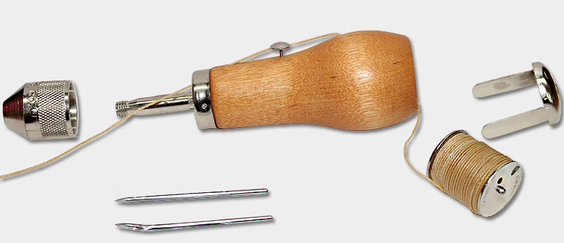

Written by Jayesh Sharma

Task: Make our adhesive strap sturdier and more durable
Today the team had an experience that most of us haven't had before: the art of sewing. The reason is that our adhesive strap needs extra support so the durability is sustained throughout competition.
The Awl we used (Speedy Stitcher ®) allowed for the use of multiple fabrics to be sewn together and for our adhesive strap to stay together. We also tuned up our Samantha module program.
The field system is working now and, as we updated Samantha, now works and we are ready for driver practice. The remotes are synced up and, with the new system, sync up with the
field control much faster.
Reflections:
After weeks of dealing with metal parts and programming with Robot C, it was a kind of refreshment for the team to sit down and sew. With Samantha now working with efficiency, we can
also get some much-needed driver practice in. We also found that doing a repetitive task such as sewing helps come up with ideas, and killing two birds with one needle, we also give our
adhesive strap much greater durability to remain stable throughout competition.